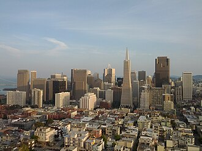
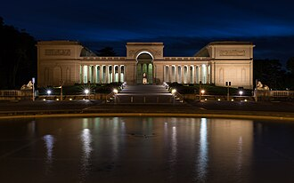
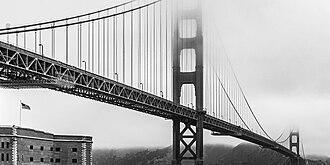

Исторические и справочные гербы


San Francisco
Путеводитель. Объектов в этом выпуске: 30.
OTIUM — практика нарочитого досуга. В античном смысле otium — не побег от работы, а время, когда внимание возвращается к памяти, пейзажу и мысли — без прикладного дедлайна.
Мы выстраиваем маршруты для неспешного присутствия, а не для чек-листа достопримечательностей: важно быть в месте, а не «потреблять» виды.
OTIUM — не туроператор. Это приглашение пройтись, остановиться и оставить маршрут незавершённым, если свет на фасаде заслуживает ещё минуты.
Исторические и справочные гербы
Путеводитель. Объектов в этом выпуске: 30.
Сан-Франциско — крупный город Калифорнии на тихоокеанском побережьи, узел золотой лихорадки и технологий.
Испанские и мексиканские корни, кабельные трамваи, мост «Золотые Ворота» и холмы определяют силуэт. Многоязычные кварталы, университеты и кремниевая долина сделали город символом инноваций.
Землетрясение 1906 года и контркультура 1960-х сформировали образ города; кризис и технологический бум залива превратили регион в центр инноваций. Сан-Франциско борется с жилищным кризисом, сохраняя мосты, туман и роль в истории прав ЛГБТ.








